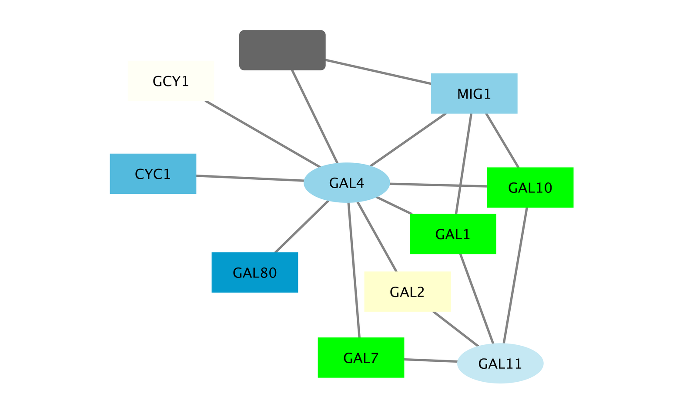

Basic Expression Analysis
This tutorial presents a scenario of how expression and network data can be combined to tell a biological story and includes these concepts:
- Visualizing networks using expression data.
- Filtering networks based on expression data.
- Assessing expression data in the context of a biological network.
Loading Network
- Start Cytoscape and click the button below to load the network galFiltered.sif.
- When the network first opens, the entire network is not visible because of the default zoom factor used. To see the whole network, click the button to Fit Content. You should now see this:
Cytoscape supports many different layout algorithms, described in detail in the Cytoscape manual.
- By default, the "Prefuse Force Directed Layout" is applied to organize the layout of the nodes.
- Click the button below to change the layout to yFiles Organic Layout.
- The network should now look like this:
Loading Expression Data
The example data is from yeast, and the genes Gal1, Gal4, and Gal80 are all yeast transcription factors. The experiments all involve some perturbation of these transcription factor genes.
Gal1, Gal4, and Gal80 are also represented in the interaction network, where they are labeled according to yeast locus tags: Gal1 corresponds to YBR020W, Gal4 to YPL248C, and Gal80 to YML051W.
Let's take a look at what the data looks like in a text editor:
GENE,COMMON,gal1RGexp,gal4RGexp,gal80Rexp,gal1RGsig,gal4RGsig,gal80Rsig
YHR051W,COX6,-0.034,0.111,-0.304,3.75720e-01,1.56240e-02,7.91340e-06
YHR124W,NDT80,-0.090,0.007,-0.348,2.71460e-01,9.64330e-01,3.44760e-01
YKL181W,PRS1,-0.167,-0.233,0.112,6.27120e-03,7.89400e-04,1.44060e-01
Note the following information about the file:
- The first line consists of column labels.
- All columns are separated by a single comma character.
- The first column contains node names, and must match the names of the nodes in your network exactly!
- The second column contains common locus names.
- The remaining columns contain experimental data, two columns per experiment (one for expression measurement and a second for corresponding significance value), and one line per node. In this case, there are three expression results per node.
- Load the galExpData.csv by clicking the below button.
- You should see expression values listed in columns in the Node Table:

The Table Panel has the following features:
- Select a node in the network and the table will update to show only the corresponding row.
- You can limit the columns shown by clicking on the Show Columns button
 and selecting columns.
and selecting columns.
Visualizing Expression Data
Probably the most common use of expression data in Cytoscape is to set the visual attributes of the nodes in a network according to expression data. This creates a powerful visualization, portraying functional relation and experimental response at the same time. Here, we will show an example of doing this.
Label the Nodes
The Styles interface in the Control Panel is where visual attributes of the network are controlled.
- To give the nodes useful names, click the button to use the "COMMON" name attribute as the node label.
- Zoom in on the network Verify that the node labels on the network have changed to their common names.
Color the nodes
- Click on the middle square (Map.) next to the Fill Color row in the Styles panel.
- Click the -- select value -- cell in the Column section.
- In the drop-down menu of available column names, select "gal80Rexp".
- Click the -- select value-- cell in the Mapping Type section.
- In the drop-down menu of available mapping types, select Continuous Mapping.
- This action will produce a gradient ranging from blue to red.
- Click on the color gradient to change the colors. This will pop-up a gradient editing dialog.
- We're going to build a basic blue-white-yellow gradient for our expression values.
- Drag the left-most, black inverted triangle handle along the top of the gradient. Drag it to an value of approx. -1.2. Double-click on the handle and set a color in the blue range.
- Drag the white inverted triangle handle to approx 0.5. You can type the value in the Handle Position section to be more precise.
- Add a new handle by clicking Add, and drag that handle to 2.5. Set the color to yellow.
- Finally, set the Maximum Color by double-clicking on the white, left-pointing triangle. Set it to green.
- You can also change the color of each handle by double-clicking or using the Node Fill Color selector button in the Handle Settings section.
- This should produce a Blue-White-Yellow Color gradient like the image below, with min and max extremes colored black and green, respectively.
- Click OK to save the gradient adjustment dialog and verify that the nodes in the network reflect the new coloring scheme.

Set the Default Node Color
Note that the default node color of pale blue falls within this spectrum. A useful trick is to choose a color outside this spectrum to distinguish nodes with no defined expression value and those with slight repression.
- Click the Def. (leftmost) square next to Fill Color and choose a dark gray color.
- Zoom out on the network view to verify that a few nodes have been colored gray.
Set the Node Shape
We imported both expression measurement values and corresponding significance values. We can use the significance values to change the shape of the nodes so that measurements we have confidence in appear as squares while potentially bad measurements appear as circles.
- Click the Map. cell next to the Shape row in the Style panel.
- Click the -- select value -- cell next to Column.
- In the drop-down menu of available column names, select "gal80Rsig".
- Click the -- select value -- cell next to Mapping Type.
- In the drop-down menu of available mapping types, select Continuous Mapping.
- This will create an empty icon in the Current Mapping row of the Shape section. Click on this icon.
- This action will pop-up a continuous shape selection dialog.
- Click the Add button.
- This splits the range of values with a slider down the middle with a node shape icon to either side.
- This will pop-up a node shape selection dialog.
- In the node shape selection dialog, choose the Rectangle shape and click the Apply button.
- Click the black triangle and move the slider to the left, to slightly lower that 0.05, our threshold for significance.
- Close the continuous shape selection dialog and verify that some nodes now have a square shape.
The network should now look like this:

Fun with Charts
In addition to coloring the nodes, Cytoscape also provides the ability to draw charts and graphs on each node. For example, suppose we wanted to display a bar chart showing all of the expression values on each of our nodes?
- To reset things a little, remove the mapping for Fill Color by doing a Right-Click over the Fill Color row and selecting Edit → Remove Mappings from Selected Visual Properties.
- Now change the default value to a lighter shade of grey so we can see our chart.
- Near the top of the panel, select Properties and choose Paint → Custom Paint 1 → Image/Chart 1. This will add a new row in our list of Node Visual Properties called Image/Chart 1.
- Select the Def. (leftmost) cell in the Image/Chart 1 row to bring up the Graphics dialog.
- Select the Charts tab.
- Move the three columns containing the expression data (gal1RGexp, gal4RGexp, gal80Rexp) from Available Columns: to Selected Columns: by selecting the rows and clicking the right arrow. This indicates that we're going to use the data from these three columns to create our chart.
- Now select Heat Strips for the type of bar chart.

- Click on Options if you want to add labels to the graphs, change the default coloring, etc.
- Click Apply to see the resulting charts.

Filter Interactions
Your network contains a combination of protein-protein (pp) and protein-DNA (pd) interactions. Next, we will filter out the protein-protein interactions to focus on the protein-DNA interactions.
- Click the Select tab in the Control panel.
- Click the + icon and select Column Filter.
- Select the drop-down list and choose Edge: interaction.
- This action will create a text search box entry in the filter.
- Type the letters "pp" into the text search box. This indicates that we're searching for all edge interaction attributes that match the string "pp".
- For reasonably sized networks, the filter will automatically be applied. For larger networks, you may need to click the Apply button at the bottom of the Select panel.
- You should now see many edges in the network selected (i.e., colored red).
- Since we're only interested in the protein-DNA edges, we can delete the protein-protein edges we've just selected.
- Select the menu Edit → Delete Selected Nodes and Edge. You should now see many unconnected nodes in the network.
- Select the menu Layout → Cytoscape Layouts → Prefuse Force-Directed Layout to clean up the network visualization.
- The largest component of the final filtered and cleaned up network should look like this:

Observe the Network
Notice that three bright green (highly induced) nodes are in the same region of the graph. Zoom into the graph to see more details.
- Notice that there are two nodes that interact with all three green nodes: GAL4 (YPL248C) and GAL11 (YOL051W).
- Select these two nodes and their immediate neighbors by selecting the menu Select → Nodes → First Neighbors of Selected Nodes → Undirected.
- It is sometimes useful to create a new network from selected nodes. Do this by selecting the menu File → New → Network → From Selected Nodes, All Edges.
With some layout and zooming, this new network should appear similar to the one shown:
Exploring Nodes
- Right click on the node GAL4.
- Select the menu External Links → Sequences and Proteins → Entrez Gene.
- This action will pop-up a browser window and search the Entrez Gene database for the term "YPL248C", the id of the node.
- In the results in the browser the first entry should be labeled GAL4. Click on this entry.
- The description of GAL4 tells us that it is repressed by GAL80.
Our data show precisely this:
- Both nodes (GAL4 and GAL11) show fairly small changes in expression, and neither change is statistically significant: they are rendered as light-colored circles. These slight changes in expression suggest that the critical change affecting the black nodes might be somewhere else in the network, and not either of these nodes.
- GAL4 interacts with GAL80 (YML051W), which shows a significant level of repression: it is depicted as a red square.
- Note that while GAL80 shows evidence of significant repression, most nodes interacting with GAL4 show significant levels of induction: they are rendered as green squares.
- GAL11 is a general transcription co-factor with many interactions.
Putting all of this together, we see that the transcriptional activation activity of Gal4 is repressed by Gal80. So, repression of Gal80 increases the transcriptional activation activity of Gal4. Even though the expression of Gal4 itself did not change much, the Gal4 transcripts were much more likely to be active transcription factors when Gal80 was repressed. This explains why there is so much up-regulation in the vicinity of Gal4.
Saving Results
Cytoscape provides a number of ways to save results and visualizations:
- As a session: File→Save, File→Save As...
- As an image: File→Export as Image...
- To the web: File→Export as Web Page...
- To a public repository: File→Export→Network Collection to NDEx
- As a graph format file: File→Export→Network.
Formats:- CX JSON
- Cytoscape.js JSON
- GraphML
- PSI-MI
- XGMML
- SIF
{kind=link}